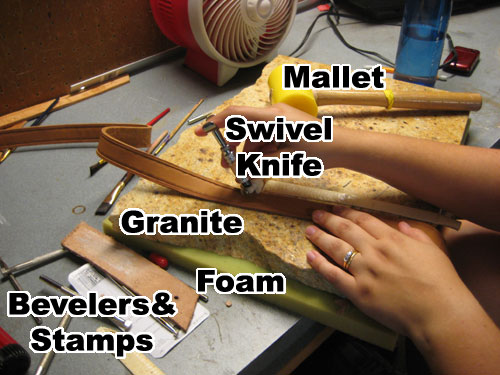

Materials Needed
Box cutter - Forget fancy shears or knives, a simple box cutter with replacable blades is perfect for leatherwork.
Cutting board - Get the cheapest one you can find, because it's going to get beat up. Anything that punches through the leather should be done on this, otherwise the marble/granite/concrete on the other side will mess your tools up. I use one side for punching holes, and the other side for cutting. Replace this as necessary, it will disintegrate with use.
Swivel Knife - Basic leather crafting is just cutting designs with a swivel knife and bevelling down one side. Ask an employee at Tandy to show you how to work it if you can.
Jeweler's Rouge - Used for stropping the swivel knife. One thing of this will last a lifetime.
Beveler - I recommend just the
Craftool B701 or
B801. There are some good prices on 7 tool starter kits, but this one gets 90% of the use as a beginner.
Poly Mallet - The most expensive item on here. I used a $5 rubber mallet until I knew I wanted to commit to leatherworking. It'll work, but this one is so much better, and will last practically forever.
4-prong Chisel Punch - Makes evenly spaced holes for saddle-stitch sewing. Only ever use this on a cutting board or soft deformable surface. I use
Craftool 8067, but there are many equivalent ones out there.
Hole Punches-I use a combination of the interchangable tip straight punches (
Small and
Large sized), but I find my most frequently used size is the
5/32"-size 4, which works great for rivets, snaps, and buckle tounge holes. I don't recommend getting a rotary punch at first because the inexpensive ones are not very good, and they require the holes to be on the edge of the leather in question.
Artificial Sinew - This is the thread, and can be dyed later to the correct color, so white or natural is fine.
Needles - Plan on using them for hand stitching. I recommend against the fancy awl with spool, they are prone to failure.
Rubber Cement - keeps the leather lined up for punching holes and sewing. Barge cement works better for permanent bonding.
Marble Slab - Cement floors will work in a pinch, but I can tell you it gets old doing all your work lying on the floor. A 1 foot square of marble or granite can usually be found as a leftover or sample at a countertop store. Look around, ask around, anywhere that does granite or marble countertops.
Tandy sells a $40 one ($20 when it's on sale), but that should be a last resort, and shipping is killer if you buy it online.
| Tool |
Price |
Location |
Used for? |
| Box Cutter |
$1-$5 |
Home Depot |
Cutting, trimming |
| Cutting Board |
$2 |
Wal-Mart |
Cutting, holepunching/sewing |
| Swivel Knife |
$13-15 |
Tandy |
Carving designs |
| Beveler |
$8 |
Tandy |
Tooling |
| Jeweler's Rouge |
$3.50 |
Tandy |
Tooling |
| Poly Mallet |
$23 |
Tandy |
Tooling, holepunching/sewing |
| 4 prong chisel punch |
$10 |
Tandy |
sewing |
| Hole punches |
$10-25 |
Tandy |
holepunching |
| Artificial Sinew |
$4 |
Tandy |
sewing |
| Needles |
$2.50 |
Tandy |
sewing |
| Rubber Cement |
$3 |
Hobby Lobby |
sewing |
| Marble Slab |
free-$20+ |
Find |
Tooling |
Back to Leather